|
SILKROAD 이슈관리시스템(Issue Management)는 프로젝트 수행 시 발생하는 이슈들을 참여자들이 실시간으로 등록하고 이를 공유하여 신속한 처리가 가능하도록 지원한다. 프로젝트별로 발생한 이슈는 SILKROAD의 워크플로우를 통해 담당자를 지정하면 각 담당자별로 To-do list에 자동으로 등록된다.
이슈관리시스템에 등록된 이슈는 사용자의 필요에 따라 ‘Card View’와 ‘List View’ 형태로 열람이 가능하며 이슈 종류, 진행 상태 등에 따라 다양한 그래프 형태의 통계자료가 제공된다. 또한 Task모듈에서 생성된 Milestone, 진행 상태, 이슈 종류 등에 따라 그룹화 하여 이슈를 관리할 수 있다.
|
카드 뷰 (Card View) 는 생성된 이슈를 카드 형태로 표시함으로써 제목, 진행상태, 작성자 등 기본적인 정보를 쉽게 확인할 수 있도록 구성되어 있다.
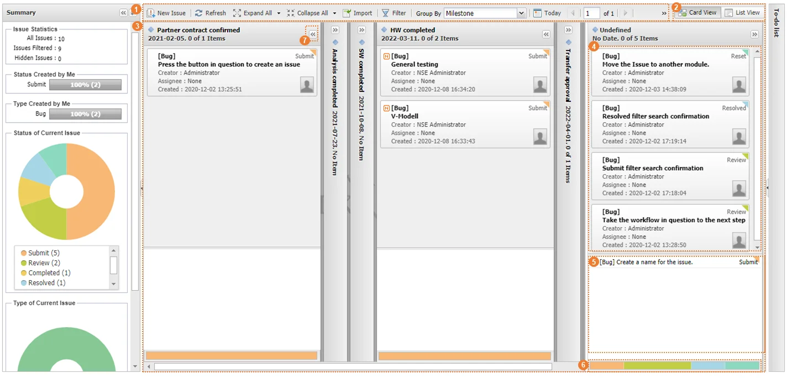 |
구분 | 명칭 | 설명 |
| 메뉴 바 | 이슈를 생성하고 관리하는 메뉴 |
| 뷰 탭 | Card View나 List View로 뷰 타입을 변경하는 메뉴 |
| Card View 화면 | 사용자가 설정한 그룹(Group By 기능) 별로 분류된 이슈 카드 및 리스트 표시하는 화면 - 카드 내 이슈 카드 영역, 이슈 리스트 영역으로 분류됨. - 영역 간의 이동은 마우스 드래그&드롭으로 가능함. |
| 이슈 카드 영역 | 카드로 설정된 이슈 표시 - 이슈 제목, 작성자, 진행상태 등 표시 |
| 이슈 리스트 영역 | 리스트로 설정된 이슈 표시 |
이슈 상태 표시 | 사용자가 설정한 그룹별로 이슈 워크플로우 진행 상태 비율 표시 | |
| Expand/Collapse | 이슈카드 펼치기/접기 |
SILKROAD 이슈 관리 시스템에 등록된 이슈를 Milestone, Priority, Workflow Status, Issue Type 등에 따라 그룹으로 설정할 수 있는 기능을 지원한다.
① 메뉴 바에서 ‘Group by’ 펼침 단추를 클릭한다.
② Issue ‘Settings’ - Properties에서 설정한 값 또는 기본 그룹 목록이 생성된다.
③ ‘Group by’에 선택한 항목이 표시되고 이슈가 선택한 항목에 따라 그룹으로 설정된다.
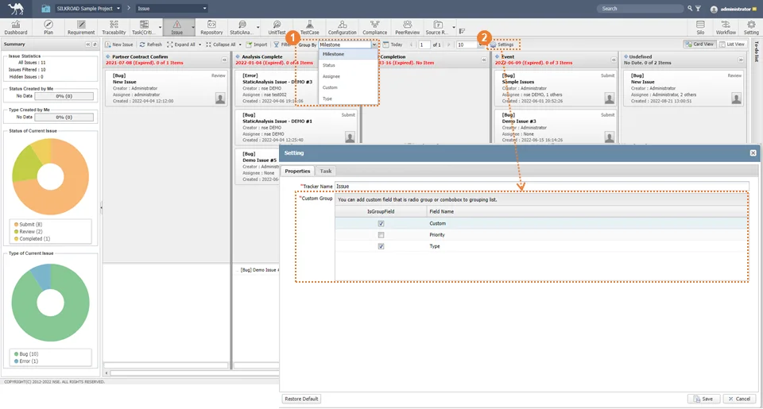 |
그룹을 ‘Milestone’으로 한 경우 SILKROAD Task 모듈에서 생성한 ‘Milestone’에 따라 그룹 이름이 변경되며 Priority, Type 등은 Settings 모듈의 ‘Custom Field’에서 사용자가 설정한 필드의 라디오버튼, 콤보박스 속성 값에 따라 변경된다. Milestone, Workflow Status, Creator, Priority, Type, Custom 그룹이 기본으로 지원되며, 필드 설정은 이슈모듈 ‘Settings’ - ‘Properties’에서 설정한다. |
리스트 뷰 (List View) 는 생성된 이슈를 목록형태로 표시하여 이슈의 모든 필드 정보를 한눈에 확인할 수 있도록 구성되어 있다.
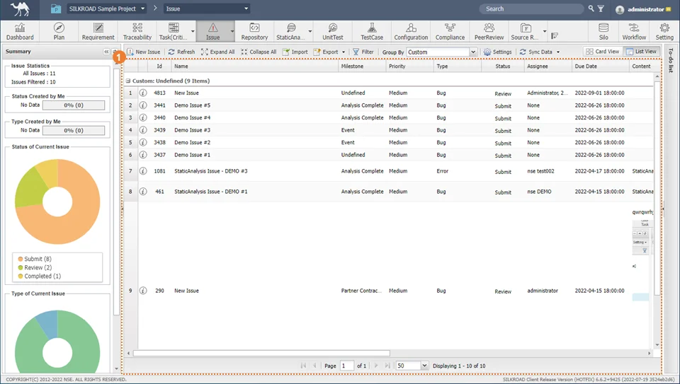 |
구분 | 명칭 | 설명 |
| List View 화면 | 사용자가 생성한 이슈 목록 표시 - 이슈 Id, 제목, 진행상태 등 표시 |
리스트 뷰에 표시될 컬럼 설정은 Settings 모듈의 CustomField - Issue - Show와 관련이 있다. |
새로운 이슈를 등록한다. 이슈를 등록하기 위한 팝업창을 생성하는 방법은 다음과 같다.
① 방법 1. 메뉴바에서 ‘New Issue’ 버튼을 클릭한다.
② 방법 2. Card View 화면의 빈 공간에서 우클릭한 후 ‘New Issue’ 버튼을 클릭한다.
③ 방법 3. Card View, List View 에 생성된 이슈에서 마우스 우클릭한 후 ‘New Issue’ 버튼을 클릭한다.
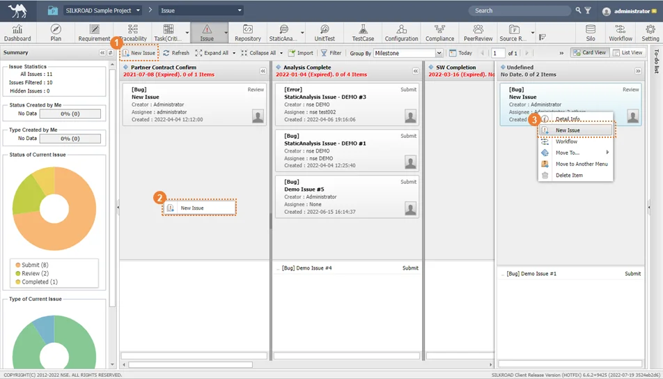 |
① Name, Milestone, Priority, Type 등 이슈 정보를 입력한다.
② 필요 시 Relation, Attachments, Meeting Minutes, Code & Standards 등에 대한 추가 정보를 입력한다.
③ ‘OK’ 버튼을 클릭하면 이슈가 등록된다.
|
이슈 제목은 필수 입력 항목으로 제목을 입력하지 않으면 이슈를 등록할 수 없다. Relation, Attachments, Meeting Minutes, Code & Standards 등에 대한 정보 입력은 SILO 모듈을 참고한다. |
등록된 이슈의 정보를 확인한다.
① 방법 1. Card View에서 등록된 이슈를 더블 클릭한다.
|
② 방법 2. List View에서 정보창 아이콘을 클릭한다.
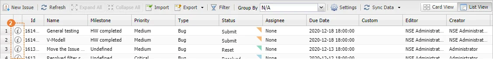 |
③ 방법 3. 등록된 이슈에서 우클릭 - ‘Detail Info’ 버튼을 클릭한다.
|
④ 방법 4. To-do List에서 담당자로 할당된 이슈를 더블 클릭한다.
|
① 방법 1. 이슈 정보창을 생성한 후 Name, Milestone 등 이슈 정보를 수정한 뒤 OK 버튼을 클릭하여 저장한다.
|
② 방법 2. ListView에서 편집 대상 셀을 마우스 더블클릭합니다. 이슈 정보를 수정한 뒤 OK 버튼을 클릭하여 저장한다.
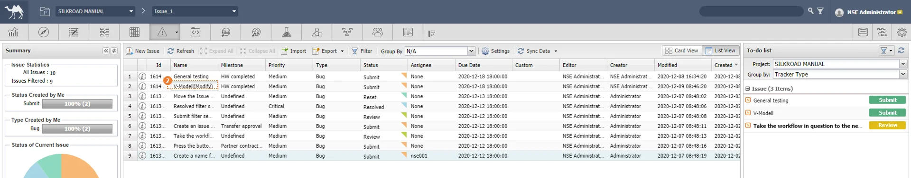 |
‘방법 2‘의 셀 편집은 필드 형식이 ‘String’, ‘radio’, ‘Combobox’, ‘Text’ 인 필드만 수정할 수 있다. 그 외의 필드는 모두 정보 창에서만 수정할 수 있다.(Settings-CustomField에서 확인할 수 있다.) |
① 방법 1. 삭제할 이슈에서 우클릭 - ‘Delete Item’ 버튼을 클릭한다.
|
② 방법 2. 삭제할 이슈 정보창을 생성한 후 ‘Delete’ 버튼을 클릭한다.
③ ‘Yes’ 버튼을 클릭하여 이슈를 삭제한다.
|
이슈의 삭제는 관리자권한을 가진 사용자(Admin, Super, 프로젝트 관리자(PM))만 버튼이 활성화 된다. 한번 삭제된 이슈 데이터는 복구할 수 없다. |
등록된 이슈를 담당자를 지정하고 업무 순서를 다음 단계로 이동한다.
① 방법 1. 등록된 이슈에서 우클릭 - ‘Workflow’ 버튼을 클릭한다.
|
② 방법 2. 등록된 이슈의 정보창을 생성한 후 ‘Workflow’ 버튼을 클릭한다.
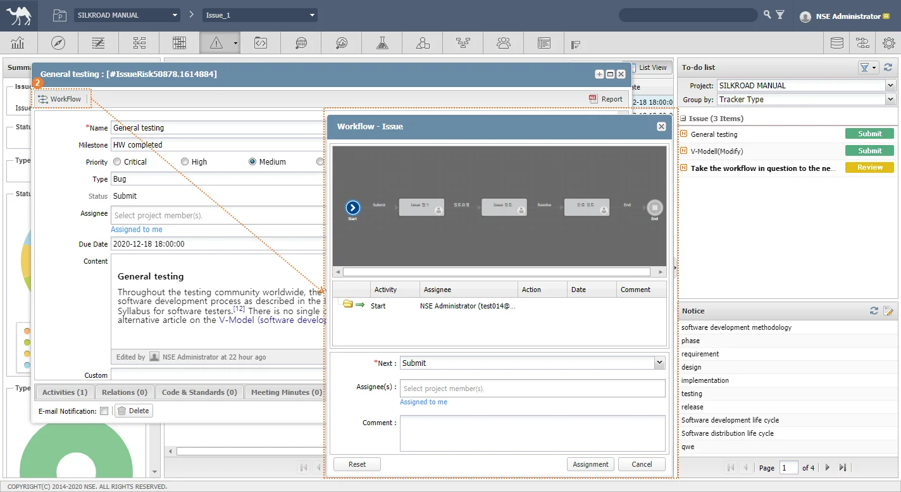 |
③ 현재 워크플로우 현황과 다음 워크플로우 단계를 확인한다.
④ ‘Assignee(s)’ 를 클릭하여 이슈를 할당할 사람을 선택한다.
⑤ ‘Comment‘ 를 작성한다.
⑥ ‘Assignment’ 버튼을 클릭하여 이슈 담당자를 할당한다.
|
종료된(Status : Completed) 이슈는 우클릭 시 Workflow 버튼이 비활성화 된다. 이슈 정보창을 실행하여 워크플로우 종료 현황을 확인할 수 있다. 이슈를 할당할 사람목록 수정은 ‘Settings’ 모듈(Settings-Participant)을 참고한다. 이슈가 할당된 사용자의 To-do list에 이슈 제목과 Workflow 진행 단계가 표시된다. 워크플로우 관련 자세한 사항은 워크플로우 모듈을 참고한다. |
마일스톤에 속한 이슈 카드들은 다른 마일스톤으로 이동시키거나 상단/하단의 목록으로 이동시킬 수 있다.
① 하단 목록 영역으로 이동할 이슈 카드를 우클릭하고 ‘Move to...’를 선택합니다. ‘Bottom List’를 클릭하면 해당 Issue 카드가 하단 목록 영역으로 이동된다.
|
② 하단 목록에서 상단 카드 영역으로 이동할 이슈를 우클릭하고 ‘Move to...’를 선택한다.‘Upper Card’를 클릭하면 상단 카드 영역으로 이동된다.
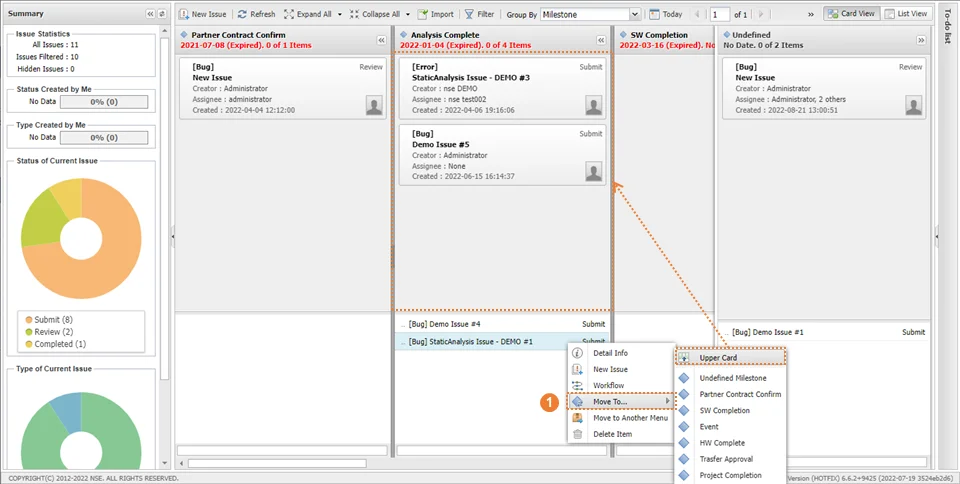 |
③ 이슈를 우클릭하여 ‘Move to...’를 선택합니다. 다른 마일스톤을 클릭하면 해당 마일스톤으로 이동된다.
|
Move to... 버튼은 Task 모듈에 마일스톤이 2개 이상 생성되어 화면에 표시되도록 설정해야 컨텍스트 메뉴에 표시된다. - Milestone 생성방법은 Task 모듈을 참고한다. |
① 상단 카드 영역에 있는 이슈 카드를 하단 목록 영역에 드래그&드랍한다.
② 이슈 목록을 상단 카드 영역에 드래그&드랍한다.
③ 이슈 카드 또는 목록을 다른 마일스톤 영역으로 드래그&드랍한다.
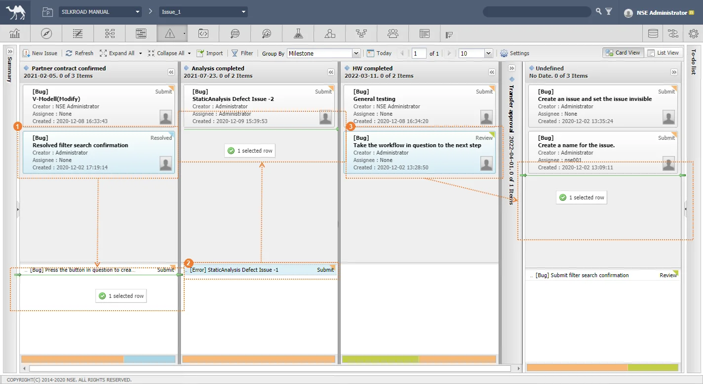 |
선택한 이슈를 다른 이슈 모듈로 이동하는 기능
① 다른 메뉴로 이동할 이슈에서 우클릭 - ‘Move to Another Menu’를 클릭한다.
② Move to Another Menu 창이 생성되면 ‘Target Tracker(Menu)’를 클릭하여 이동할 이슈 모듈을 선택한다.
③ 옮기지 않을 정보는 휴지통아이콘을 클릭하여 제외시킨다.
④ ‘Move & Close’ 버튼을 클릭하여 이슈를 이동한다.
|
프로젝트 내 2개 이상의 이슈 모듈이 존재해야 기능 사용을 할 수 있다. 삭제 아이콘을 클릭하여 이동을 제외한 필드는 ‘Skipped’로 표시된다. 이동된 이슈의 워크플로우는 ‘Reset’ 상태가 되어 이동된다. |
현재 생성된 이슈의 현황을 조건별로 확인할 수 있다.
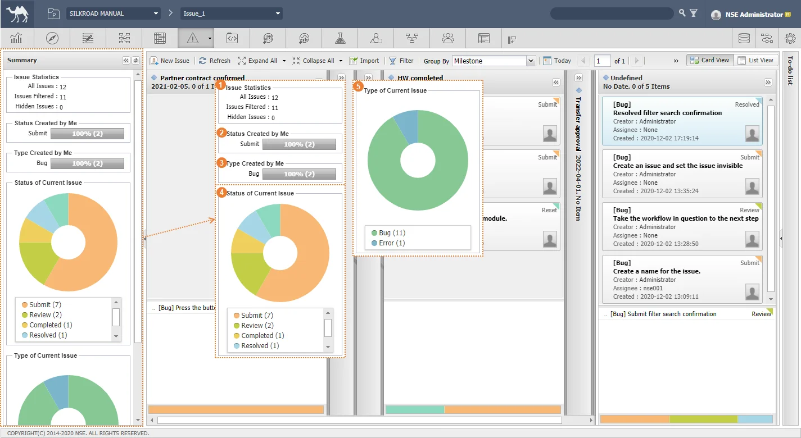 |
구분 | 명칭 | 설명 |
| Issue Statistics | - All Issues : 전체 이슈 개수 표시 - Issue Filtered : 현재 화면에 출력된 이슈 개수 표시(필터 연관) - Hiddle Issues : 이슈 ‘Settings’ 기능을 통하여 Hide 설정된 이슈 개수 표시 |
| Status Created by Me | 사용자가 생성한 이슈의 워크플로우 진행 상태에 따른 통계 그래프 표시 |
| Type Created by Me | 사용자가 생성한 이슈의 유형에 따른 통계 그래프 표시 |
| Status of Current Issue | 전체 이슈의 워크플로우 진행 상태에 따른 통계 그래프 표시 |
| Type of Current Issue | 전체 이슈의 유형에 따른 통계 그래프 표시 |
‘Issue Statistics’의 이슈 개수는 필터(Filter)의 설정에 따라 이슈 개수 표시가 달라진다. 이슈 진행 상태(Status)는 워크플로우 모듈에서 ‘Activity’의 Status에 따라 통계 그래프에 표시된다. 이슈 유형(Type)은 ‘Settings’ 모듈에서 ‘Custom Field’의 Type 설정에 따라 통계 그래프에 표시된다. 요약차트에서 각 항목에 대한 상세 정보 보기 및 필터 기능을 제공한다. |
① 메뉴바 ‘Refresh’ 버튼을 클릭한다.
② Summary 차트 ‘ ’ 버튼을 클릭한다.
’ 버튼을 클릭한다.
③ Summary 차트와 뷰에 적용된 필터가 초기화되며 전체 이슈 목록이 출력된다.
|
그룹 탭 전체를 펼쳐 보이게 하거나 이슈 카드(데이터)가 포함되어 있는 그룹 탭만 펼쳐보이게 하는 기능을 제공한다.
① ‘Expand All’ 버튼을 클릭한다.
② 그룹 탭 전체가 펼쳐진다.
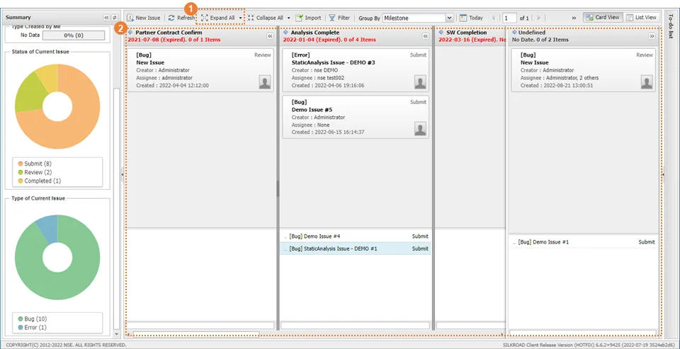 |
① ‘Expand All’ 아이콘 우측의 펼침 단추를 클릭한다.
② ‘Expand - Have Item’ 버튼을 클릭한다.
③ 접혀진 그룹 중 이슈 카드(데이터)가 포함되어 있는 그룹 탭이 펼쳐진다.
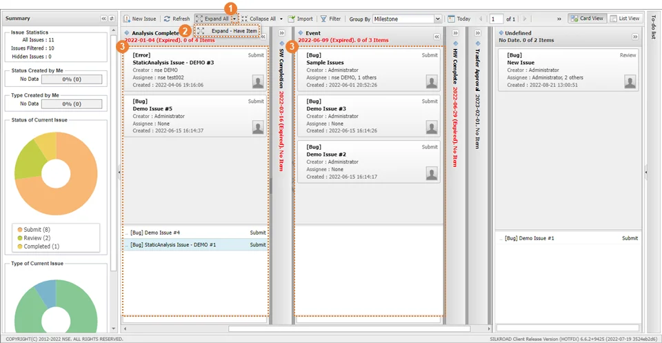 |
그룹 탭 전체를 접거나 이슈 카드(데이터)가 없는 그룹 탭만 접어 그룹명만 보이게 하는 기능을 제공한다.
① ‘Collapse All’ 버튼을 클릭한다.
② 그룹 탭 전체가 접힌다.
|
① ‘Collapse All’ 아이콘 우측의 펼침 단추를 클릭한다.
② ‘Collapse - Have Item’ 버튼을 클릭한다.
③ 이슈 카드(데이터)가 없는 그룹 탭이 접혀진다.
④ 이슈 카드(데이터)가 포함되어 있는 그룹 탭은 펼쳐진 상태로 표시된다.
|
① ‘Import’ 버튼을 클릭하여 ‘Import Issue’ 창을 생성한다.
② ‘Application Target’을 클릭하여 불러올 대상의 유형을 선택한다. (JIRA, Excel)
③ ‘File Type’을 클릭하여 파일 유형을 선택한다.
- JIRA : XML
- Excel : xlsx, xls
④ ‘Browse‘ 버튼을 클릭하여 사용자 PC에서 파일을 선택한다.
⑤ ‘Next’ 버튼을 클릭한다.
|
⑥ Import할 파일의 컬럼과 SILKROAD의 컬럼이 매핑된 경우 ‘ ’ 버튼이 표시된다. Import한 파일의 컬럼에 값이 없는 경우 빈 칸을 채워 줄 기본 값을 ‘Default Value’에 입력한다.
’ 버튼이 표시된다. Import한 파일의 컬럼에 값이 없는 경우 빈 칸을 채워 줄 기본 값을 ‘Default Value’에 입력한다.
⑦ SILKROAD로 Import 하지 않을 항목은 ‘삭제아이콘’을 클릭하여 컬럼을 삭제한다.
⑧ ‘Target Field Name’의 값을 클릭하면 SILKROAD에 매핑되는 컬럼을 변경할 수 있다.
⑨ ‘Next’ 버튼을 클릭 시 ‘’ 된 컬럼을 기준으로 Import가 완료되며 성공 메시지 창이 생성된다.
|
유형이 Excel인 경우, SILKROAD에서 Export 한 엑셀 유형의 파일만 불러올 수 있다. Import 할 파일 내 데이터가 없는 경우, Import 되지 않는다. Settings Custom Field ‘Issue’에서 매핑할 커스텀 필드를 생성할 수 있다. ‘Prev’를 클릭 시 이전으로 되돌아갈 수 있다. |
① ‘Export’ 버튼을 클릭한다.
② 원하는 형식의 버튼을 클릭하여 사용자의 로컬 PC로 다운로드 한다.
|
구분 | 명칭 | 설명 |
| Export to Excel | MS-Excel ‘xlsx’확장자로 이슈 목록이 다운로드 된다. 해당 형식은 로컬에서 편집하여 다시 Import가 가능하다. |
| Export to Word | MS-Word ‘docx’확장자로 이슈 목록이 다운로드 된다. |
| Export to Web (Print) | HTML 형식으로 이슈 목록이 표시되며 인쇄할 수 있다. |
| Export to Excel (ALL) | 이슈의 모든 필드와 데이터가 다운로드 된다. |
내보내기(Export)는 리스트뷰에서만 가능하다. Export to Excel(ALL)을 제외하고 현재 리스트 뷰에 표시되는 내용을 기준으로 파일이 다운로드 된다. |
필터 (Filter) 는 Id, Name, Content, Due Date 등과 같은 검색 조건을 입력하여 이슈 데이터 중 사용자가 원하는 데이터만 볼 수 있다.
① ‘Filter’ 버튼을 클릭하여 필터 옵션 창을 표시한다.
② 검색 조건을 입력한다.
③ ‘Search’ 버튼을 클릭한다.
④ 사용자가 입력한 조건에 맞는 데이터만 표시된다.
|
⑤ ‘Reset Filter’ 버튼을 클릭하면 사용자가 지정한 검색 조건이 초기화 된다. 이후 ‘Search’ 버튼을 클릭하면 검색 결과가 초기화된다.
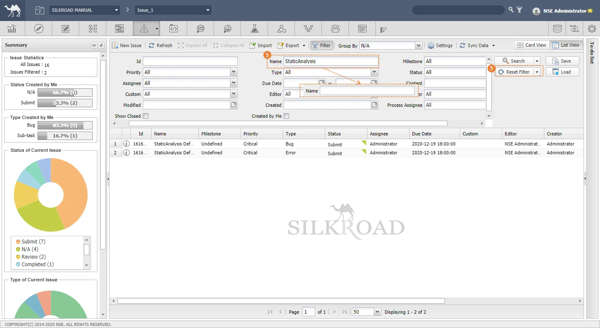 |
⑥ ‘Reset Filter’ 펼침단추( ) ‘Reset Filter & Search’ 버튼 클릭 시 리셋되며 검색된다.
) ‘Reset Filter & Search’ 버튼 클릭 시 리셋되며 검색된다.
필터 버튼 클릭 시 나오는 필드 목록은 ‘Settings’모듈 ‘Custom Field’의 ‘Search’ 컬럼과 연관이 있으며, 설정할 수 있다. |
이슈 데이터에 대한 상세 검색을 위해 조건부 서식을 이용한 검색 기능을 지원한다.
① ‘Search’ 버튼의 펼침단추( )를 클릭한다.
)를 클릭한다.
② 조건부 서식을 입력한다.
③ ‘Search’ 버튼을 클릭한다.
④ 사용자가 지정한 조건에 따라 검색 결과가 표시된다.
|
일반 필터 영역과 상세 필터 영역에 검색 조건이 함께 존재하는 경우, 두 개의 영역은 ‘AND’ 조건으로 검색된다. |
① 필터 조건이 입력된 상태에서 ‘Save’ 버튼을 클릭한다.
② ‘Name’을 입력하고 ‘OK’ 버튼 클릭하여 필터를 저장한다.
|
① ‘Load’ 버튼을 클릭한다.
② 불러올 필터를 클릭하고 ‘OK’ 버튼을 클릭한다.
③ 저장한 필터로 필터링 된다.
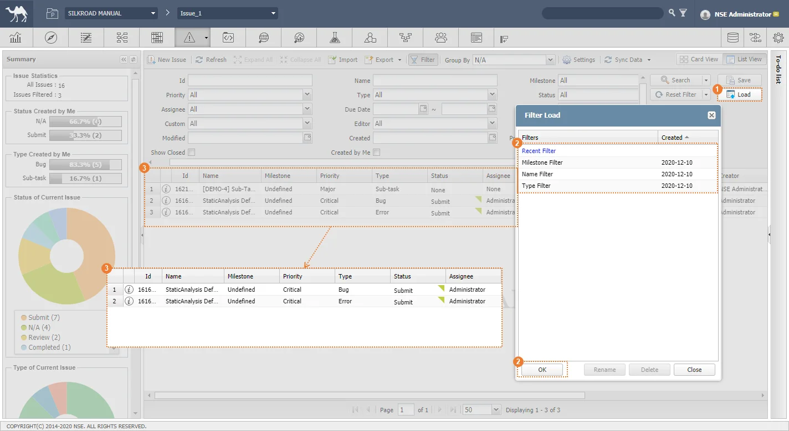 |
현재 활성화 되어있는 필터의 글자색은 ‘파란색’으로 표시된다. 동일 이름으로 필터를 저장할 수 없다. 가장 최근 검색 결과가 ‘Recent Filter’ 로 자동 저장되며 ‘Load’를 통해 검색 조건의 필터를 불러올 수 있다. Reset Filter를 하더라도 가장 최근 검색 결과는 초기화되지 않는다. |
① Load 창에서 이름을 변경할 필터를 클릭한 뒤 ‘Rename’ 버튼을 클릭한다.
② 변경할 이름을 작성한 뒤 ‘OK’ 버튼을 클릭한다.
|
① 저장한 필터 중, 삭제할 필터를 클릭한 뒤 ‘Delete’ 버튼을 클릭하여 삭제한다.
|
현재 날짜와 가장 가까운 마일스톤을 화면의 중앙에 표시해주는 기능을 지원한다.
① ‘Today’ 버튼을 클릭한다.
② 현재 날짜와 가장 가까운 마일스톤으로 Card View 가 이동된다.
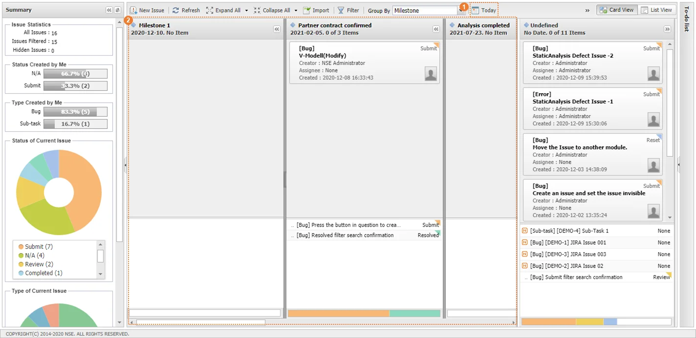 |
이슈 그룹의 화면 표시를 페이징하여 조절할 수 있는 기능을 지원한다.
① ‘’를 클릭하여 한 화면에 표시할 이슈 그룹 개수를 선택한다.
② 사용자가 선택한 개수만큼 페이징 되어 화면에 표시된다.
|
① ‘’를 클릭하여 원하는 페이지 번호를 작성한 후 적용하여 이동한다.
② ‘’ ‘’를 클릭하여 한 페이지 단위로 이동한다.
|
SILKROAD에서 기본적으로 생성되는 ‘Custom’ 필드로 그룹화하고 Custom 필드에서 사용할 값을 설정하여 관리한다.
① Group by 목록에서 ‘Custom’을 클릭한다.
② Custom 그룹 선택과 동시에 생성된 ‘New Group’을 클릭한다.
③ Custom의 그룹값을 입력하고 OK 버튼을 클릭하여 생성한다.
|
Custom Group 은 카드 뷰(Card View) 에서만 생성이 가능하다. |
① 생성된 그룹의 ‘’ 버튼을 클릭한다.
② 변경할 이름을 입력한 후 ‘OK’ 버튼을 클릭한다.
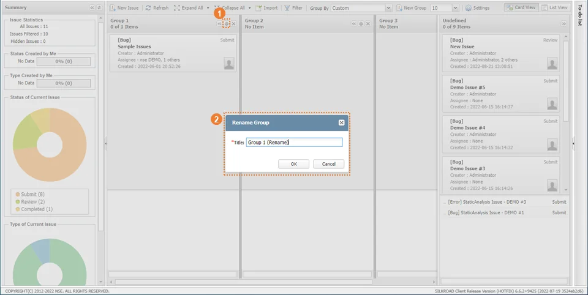 |
중복된 이름을 작성할 수 없다. |
① 생성된 그룹의 ‘’ 버튼을 클릭한다.
② 삭제 요청 메시지 창에서 ‘Yes’ 버튼을 클릭하여 생성된 Custom Group을 삭제한다.
|
이슈모듈의 속성(Tracker Name, Custom Group) 및 Task 모듈의 Milestone 을 연동하여 사용할 Milestone 등을 설정할 수 있는 기능을 지원한다.
① ‘Settings’ 버튼을 클릭한다.
② 변경하고자 하는 ‘Tracker Name’을 입력한다.
③ 이슈그룹에 추가하고자하는 항목의 체크박스를 선택한다.
④ ‘Save’ 버튼을 클릭한다.
|
⑤ 사용자가 입력한 Tracker Name 이 표시된다.
⑥ 사용자가 체크한 Custom Group 은 Group by 콤보박스에 표시된다. (Milestone, Status, Assignee는 기본 필드 임)
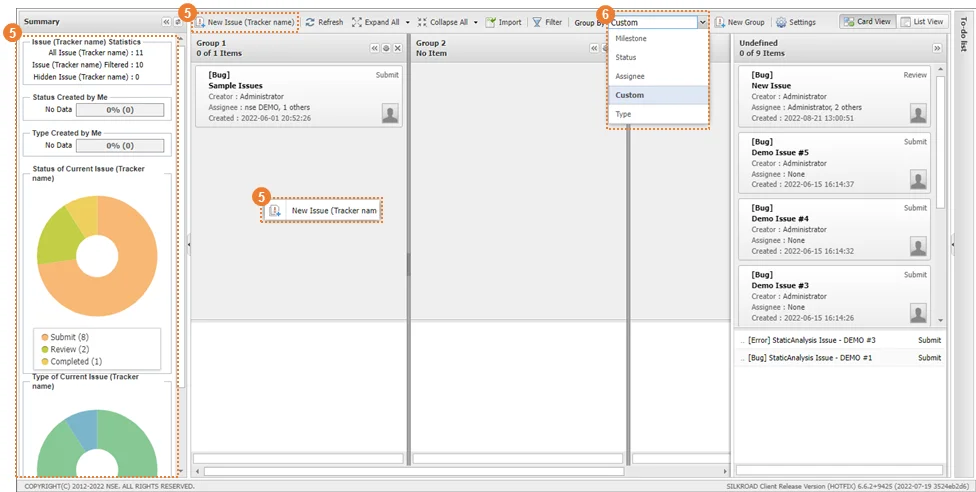 |
‘Custom Group’ 은 ‘Settings 모듈 - Custom Field’에서 필드를 추가하는 경우, 이슈 그룹에 추가할 수 있는 기능이다. (단, 커스텀 필드의 타입은 Combo-box, Radio 만 가능하다.) |
이슈 모듈은 협업관리시스템(Task Management)의 마일스톤과 연동되어 있다. 이슈관리시스템 내 카드 뷰에서 보일 마일스톤 또는 리스트 뷰/정보창 내 존재하는 ‘Milestone’ 필드에 보일 마일스톤을 설정할 수 있다.
① ‘Settings’ 버튼을 클릭하여 ‘Setting’ 창을 생성한 뒤 ‘Task’ 탭을 클릭한다.
② Task 영역에서 협업관리시스템의 모듈 중 이슈관리시스템과 연동하고자 하는 모듈을 선택한다.
③ 선택한 모듈에서 이슈관리시스템과 연동하고자 하는 마일스톤을 선택한다.(하단 표 참고)
④ ‘Save’ 버튼을 클릭하여 저장한다.
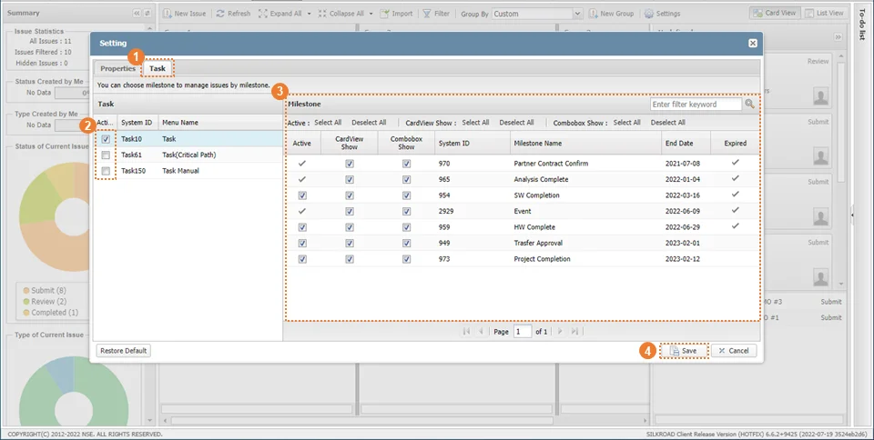 |
선택여부 | 설명 | ||
Active | CardView Show | Combobox Show | |
☑ | ☑ | ☑ | - Card View에서 체크한 마일스톤이 보임 - 이슈 Milestone 콤보박스 클릭 시 체크한 마일스톤이 보임 |
☑ | ☐ | ☑ | - Card View에서 체크한 마일스톤이 보이지 않음 - 이슈 Milestone 콤보박스 클릭 시 체크한 마일스톤이 보임 |
☑ | ☑ | ☐ | - Card View에서 체크한 마일스톤이 보임 - 이슈 Milestone 콤보박스 클릭 시 체크한 마일스톤이 보이지 않음 |
☐ | ☐ | ☐ | - Card View에서 체크한 마일스톤이 보이지 않음 - 이슈 Milestone 콤보박스 클릭 시 체크한 마일스톤이 보이지 않음. |
⑤ 키워드 검색을 통해 사용자가 원하는 마일스톤 검색이 가능하다
|
Group by는 Milestone으로 설정한 상태에서 확인한다. Card View에서 마일스톤에 이슈가 등록되어 있는 경우에는 ‘Active’ 여부를 선택할 수 없다. ‘Active’에 체크가 되어있어야 ‘Card View SHow’, ‘Combobox Show’ 체크박스가 활성화 된다. Card View Show는 Card View 내에 Group by를 ‘Milestone’ 으로 한 경우 카드 뷰 영역에 체크박스 체크 여부에 따라 마일스톤 그룹이 표시/미표시 된다. Combobox Show는 이슈 정보창 또는 List View에서 Milestone 컬럼을 더블클릭 시 나타나는 콤보박스에 대한 설정이다. 체크박스 체크 여부에 따라 콤보박스에 표시/미표시 된다. |
① ‘Settings’ 창 하단의 Restore Default 버튼을 클릭합니다.
② ‘Yes’ 버튼을 클릭하여 설정을 초기화 합니다.
|
번호 | 메시지 | 설명 | 해결방안 |
|---|---|---|---|
1 | Unsupported file contents. | Import, Sync Import 시 지원하지 않는 파일 업로드 시도한 경우 | 업로드 하고자 하는 파일 내용 확인해야 함 |
2 | Please make sure if the input data is valid. | Import, Sync Import 시 유효하지 않는 데이터가 존재하는 경우 | 업로드 하고자 하는 파일 내용 확인해야 함 |
3 | Upload Fail! | Import, Sync Import 시 SILKROAD에서 설정한 Time Out시간을 초과하거나 데이터 업로드 실패한 경우 | 인터넷 환경 점검 및 SILKROAD 관리자 문의해야 함 |
4 | No data to synchronize. | Import, Sync Import 시 파일에 내용이 없는 경우 | 업로드 시 내용이 존재하는 파일 업로드 해야 함 |
5 | Please upload file. | Import, Sync Import 시 파일을 업로드 하지 않고 다음 단계를 수행하고자 하는 경우 | 파일 업로드 후 다음 단계를 수행해야 함 |
6 | Matching fields not found | import, Sync Import 파일 내 필드가 현 프로젝트 필드에 매칭할 수 없는 경우 | 파일과 매칭될 수 있는 필드를 생성해야 함 |
7 | Fail to Sync! | Sync 데이터 Import 시 동기화 실패하는 경우 | 업로드 하고자 하는 파일 내용 확인해야 함 |
8 | Export Failure ! | Import, Sync Export 시 실패하는 경우 | Export 대상 이슈 목록 확인해야 함 |
9 | An error has occurred. Please try again. | 이슈 모듈에 저장된 데이터를 불러오지 못한 경우 | SILKROAD Web 새로고침해야 함 |
10 | You can not enter empty name. | Group by Custom 일 때, 커스텀 그룹 생성 시 이름 입력하지 않고 저장한 경우 | 이름을 입력한 후 저장 시도해야 함 |
11 | Fail to import! | 이슈 Import 시 업로드 실패하는 경우 | 이슈 Import 재시도 및 업로드 하고자 하는 파일 내용 확인해야 함 |
12 | Application type or file type has not been chosen. | 이슈 Import 시 응용 프로그램 유형 또는 파일 유형이 선택하지 않은 채 다음 단계를 수행하고자 하는 경우 | Import 유형 선택 후 다음 단계를 수행해야 함 |
13 | Error! Please Try again. | Move to Another Menu 기능 사용 시 이슈를 다른 이슈 메뉴로 이동 실패하는 경우 | SILKROAD Web 새로고침 후 재시도 해야 함 |
14 | You can not change to the same tracker. | Move to Another Menu 기능 사용 시 같은 메뉴로 이슈를 이동하고자 하는 경우 | 다른 메뉴를 선택해야 함 |